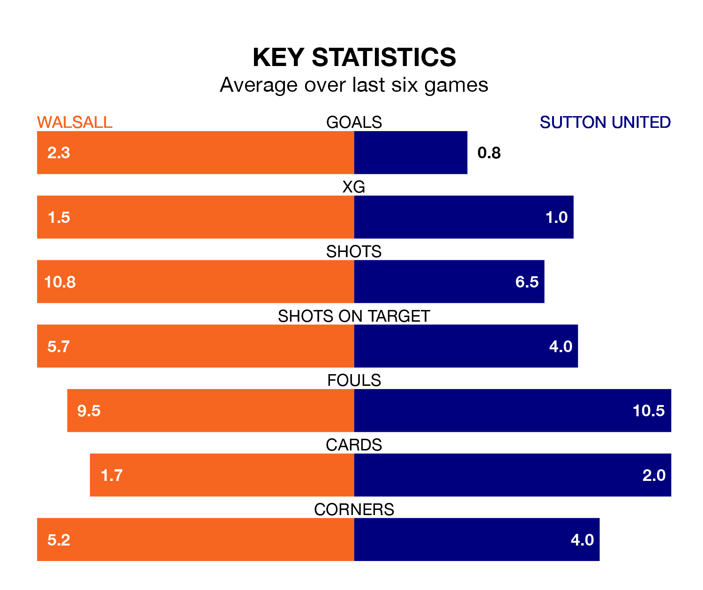

Sutton United travel to the Poundland Bescot Stadium looking to secure a first win in five EFL League Two games against Walsall on Saturday.
The Us have lost one and drawn three matches since they last earned three points – against AFC Wimbledon on December 26.
They face a Walsall side who have won three and lost one over that time.
Sutton are 23rd in the table after 27 games, of which they have won four and drawn eight, earning 20 points.
Walsall are eight places ahead of United in 15th, with 10 wins and six draws putting them on 36 points.
With 31 goals in 27 games so far this season, the Us are scoring at below the league average rate with 1.1 goals per game. And they are conceding more than average, letting in 55 goals at a rate of 2.0 per game.
The Saddlers, meanwhile, are average scorers, with 1.5 goals per game. They have also conceded 1.5 goals per game.
In the last five years, Walsall and Sutton have played each other on five occasions. Walsall won two of them, Sutton one, and they drew twice.
On average, the Saddlers scored 0.8 goals and the Us 1.2 in those matches.
Their last meeting was on October 7, when Sutton won 4-0 at home.
Walsall's last match was on January 13, a 3-1 loss against Stockport County, with Douglas James-Taylor getting the goal for the Saddlers.
Sutton drew 1-1 with Mansfield Town last time out, on Tuesday, with Lee Angol on the scoresheet.
Saturday's match will be refereed by Ross Joyce, who has taken charge of nine EFL League Two games so far this season, issuing five red cards and booking 37 players. He has awarded one penalty.
He is yet to oversee a match featuring either Walsall or Sutton this season.
Updated: 08:51 (UTC), 25/01/24